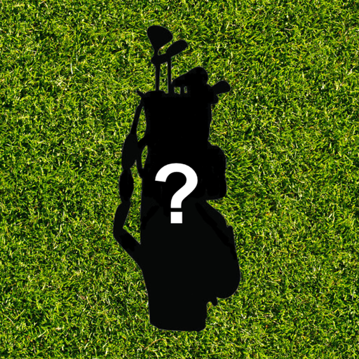

Which Club? Golf GPS
If you like it - rate it

Read iOS App Spy's review here
Read App Picker's review here
BEFORE YOU START:
Select 'Bag Setup' to update your clubs with your approximate yardage distance.
SCORECARD:
Type in the Course Name and select the course pars for each hole. Recording your score will update the Current Score and Score-To-Par automatically.
Click GPS to access the satellite view of the area.
GPS & WHICH CLUB?
On the GPS, click Current Shot to update your location (you may have to click multiple times to zoom to your location).
During gameplay, select Set Flag Location to drop a pin on the green.
After dropping the pin, select Which Club? to get the distance from your current location to the green.
In Which Club? select a club to see a visual aid of how far you can hit it (based on Bag Setup)
Click the screen to clear the Which Club? options.
(There is also the option to change the lie. Tee Shot is selected by default)
iPhone Support:
Optimized for the iPhone 5(S) & 6 (plus)
The 7.1 update is needed
For any problems that happen, exiting out to the home screen and reopening will fix it
To turn off all ads permanently, it is a one time fee of $1.99